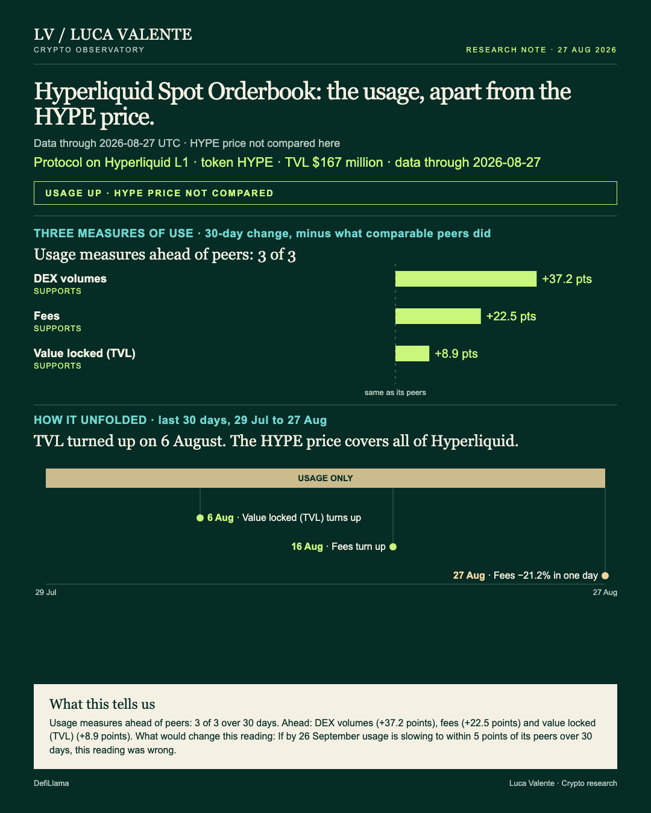
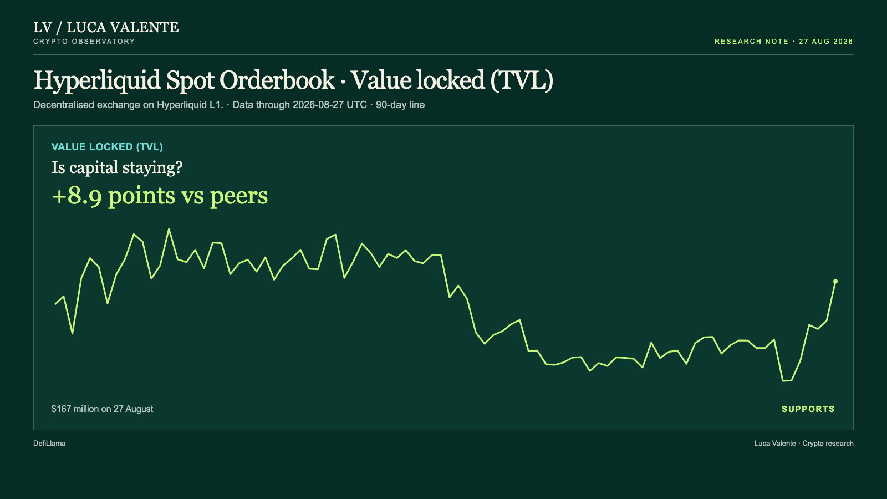
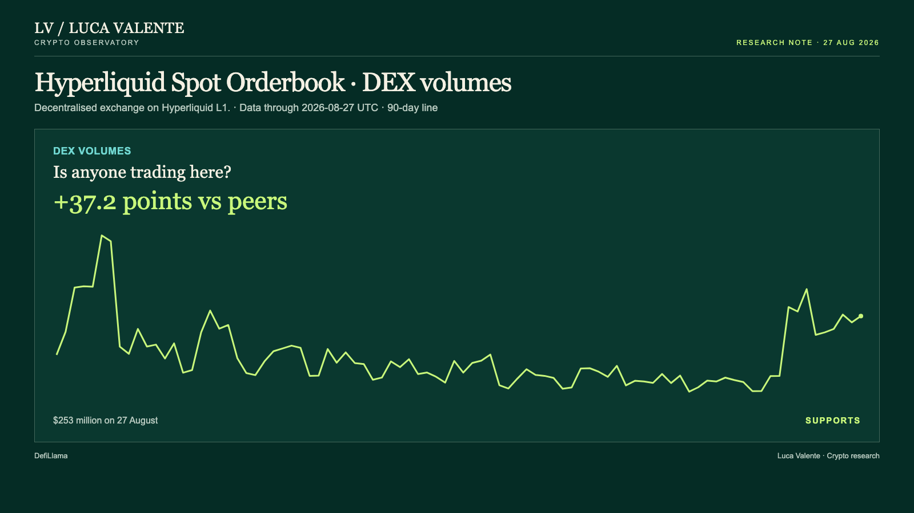

Training note, written on 23 September 2026 from data as of 27 August 2026. Not part of the published series.
A Rough Fee Day Against A Month Ahead Of Its Peers

Fees on Hyperliquid's spot order book fell 21.2% in a single day, and the broader usage picture is still ahead of its peer group. Anyone judging this exchange by that one day alone would get it backwards. That gap, between a rough day and a calmer month, is the difference between reading usage and reading noise.
Hyperliquid Spot Orderbook is the spot market that runs directly on Hyperliquid's own blockchain, one piece of a bigger platform. HYPE prices all of it, not this order book on its own. This note stays on the order book's own numbers and leaves the token out entirely.
Every comparison here runs against the same one group: 27 exchanges DefiLlama classifies together as Dexs. Not all 27 report every measure. Fees come from 17 of them, value locked from 18, trading volume from all 27, and none of the three lines in this note is ranked against the other two, only against its own slice of that group. The comparison each time is with the middle of that slice, the level half of them are above and half below.
First I read that fee drop as the story here. It isn't. Fees are what traders pay to use the order book, and the 27 August reading, $119,373, sits 21.2% below the day before, when it stood at $151,562. One day isn't the window that decides this. Over 30 days fees are up 131.4%, against a peer median of 108.9% across the 17 exchanges that report fees, a net gap of 22.5 points. That line turned up on 16 August and has risen on 7 of the 12 days since. I don't have a clean way to separate a 21.2% daily fall from ordinary noise. What the 90 days give me is a range of levels: fees have moved between $14,452, on 15 August, and $238,739, on 4 June, and $119,373 is neither edge. It tells me where today sits, and nothing about how far a single day should move. A single rough day inside a strong month reads as wear, not a reversal, at least not yet.
If I had to keep just one chart from this note, it would be value locked, the money sitting in the order book's own contracts. It's also the earliest mover of the three.

Value locked stood at $167 million on 27 August, up 9.6% from $153 million the day before. That's not a one-day spike. Over the last 30 days it has climbed 20.7%, ahead of the 11.8% median across the 18 exchanges in the group that report their own value locked, a net gap of 8.9 points. Ahead of the group, not just up. The line turned up on 6 August, before fees or trading volumes did the same, on 16 August, and it has risen on 15 of the 22 days since. Earliest to turn, and still rising most days. Over the same 90 days it has ranged between $130 million, on 21 August, and $187 million, on 12 June; the latest reading sits inside that band, not at either edge. Steady across that whole stretch, not just today. That's why it's the chart worth keeping.
Dollars swapped on the exchange each day, what the trading volume line counts, point the same way.

$253 million on 27 August, up 8.1% from $234 million the day before. Over 30 days it's up 163.1%. The median across the 27 exchanges that report DEX volumes is 125.9%, a net gap of 37.2 points over the same window. The volume line turned up on 16 August too, the same day as fees. It has risen on 9 of the 12 days since. Over the same 90 days it has ranged between $26 million, on 8 August, and $497 million, on 4 June. The latest reading sits inside that range too.
This note doesn't have everything. There's no stablecoin balance tracked here for this order book, no Layer-2 transaction count, and no developer commit history to weigh against any of it. What counts as usage in these numbers is fees, value locked and trading volume. The number of users or wallets touching the exchange isn't measured here, which matters for anyone trying to size the audience behind these dollars: the numbers can say money and trading grew, not how many people made that happen. None of it comes with a reason attached, either. There's no announcement and no story behind the fee drop or the jump in value locked, just the numbers, and nothing here goes past 27 August.
Come next month I drop this reading, on one condition. If by 26 September usage is slowing to within 5 points of its peers over 30 days, this reading was wrong.
Right now, the order book's own numbers are running ahead of where its peer group sits. That's the whole claim being made here. What I cannot see yet is whether it holds through September.
Sources: DefiLlama. Not financial advice. This is a research note based on public on-chain data.
Peer group: 27 exchanges tracked by DefiLlama. 'Net of the group' is the 30-day change minus the group's median.